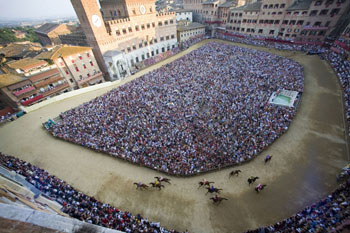
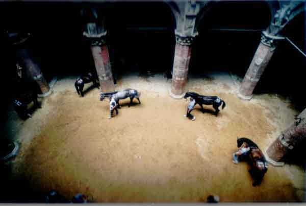
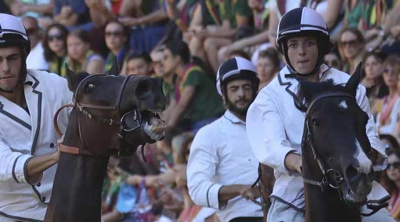

La Commissione per l’assegnazione del Masgalano, presieduta da Gabriele Bartalucci, riunitasi ieri, 18 agosto, ha conferito l'ambito riconoscimento alla Contrada dell’Oca. La Contrada del Drago era arrivata a pari merito con la Contrada dell’Oca ma, come previsto dall’art. 14 del Regolamento del Masgalano: “(…) nell’eventualità che al termine dello scrutinio, due o più Contrade vengono a trovarsi a parità di punti, l’assegnazione sarà fatta alla Contrada la cui somma dei punteggi riportati nei tre anni precedenti risulti essere la più alta (…).
Il bellissimo Masgalano, realizzato dal maestro d’arte orafa Paolo Penko, è stato offerto da Lions Club Siena in occasione del 60° anniversario del club senese e dei 100 anni del Lions International.
Questi i nomi dei rappresentanti nella Commissione: Filippo Frignani e Gabriele Boschi (Aquila), Francesco Carletti (Bruco), Paolo Petreni (Chiocciola), Matteo Ticci (Civetta), Giovanni Sportoletti (Drago), Simone Cantelli (Giraffa), Emiliano Muzzi (Istrice), Leonardo Bracali e Francesco Romei (Leocorno), Giacomo Vichi (Lupa), Andrea Finetti e Giacomo Oretti (Nicchio), Michele Landi e Alessandro Bianciardi (Oca), Donatello Giallombardo (Onda), Marco Ceccherini (Pantera), Luca Zanelli (Selva), Cesare Guideri (Tartuca), Aldo Gessani (Torre), Luca Braccini (Valdimontone).
I misuratori di bandiere e tamburi, per la Carriera dello scorso luglio: Giacomo Oretti (Nicchio) e Gabriele Boschi (Aquila); per quella di agosto sono stati Francesco Romei (Leocorno) e Alessandro Bianciardi (Oca).
Di seguito i punteggi riportati da ciascuna Contrada.
classifica finale
Nome della Contrada
punteggio luglio
punteggio agosto
punteggio totale
1
OCA
340
339
679
2
DRAGO
337
342
679
3
TARTUCA
338
340
678
4
BRUCO
338,5
339
677,5
5
ISTRICE
335
337,5
672,5
6
CHIOCCIOLA
336
332,5
668,5
7
LEOCORNO
327,5
334
661,5
8
NICCHIO
322
337
659
9
GIRAFFA
313
340
653
10
TORRE
308
345
653
11
AQUILA
338
310,5
648,5
12
ONDA
320
321,5
641,5
13
VALDIMONTONE
334
306
640
14
CIVETTA
319
320
639
15
LUPA
340
290,5
630,5
16
PANTERA
318,5
306
624,5
17
SELVA
311
312,5
624
IL GIRO DELLA VITTORIA DELL'ONDA!
IL COMMENTO E I VOTI AI FANTINI
CARLO SANNA DETTO BRIGANTE 9,5
Una corsa magistrale di un fantino che doveva, prima o poi, lasciare la zampata. A luglio ci era andato vicino, adesso ci è riuscito con un Palio di altri tempi. Parte in testa, ma Chiocciola e Montone sono interni e lo passano, costringendolo a girare terzo al primo San Martino. Al Casato sfrutta l'errore di Scompiglio per infilarlo dall'interno, ma il fantino pistoiese è bravo a non mollare e si riconquista la posizione. Il mezzo miracolo arriva dal secondo Casato in avanti. Aiutato da un Porto Alabe come non si era mai visto, Brigante infila il Montone e svernicia dall'esterno la Chiocciola, girando al primo posto a San Martino ed iniziando la sua cavalcata verso la vittoria.
NUOVO BIG
VALTER PUSCEDDU DETTO BIGHINO 8
Doveva fermare la rivale e ci riesce alla grande, portando nuovamente a casa un voto altissimo. Con la Torre “vincente” il Pusceddu si conferma mago della parata, iniziando ad infastidire il Mari appena entrato ai canapi. Cerca sempre il contatto con la Torre, che come per le prove rimane in seconda fila. Appena il Tittia entra, Bighino indirizza il cavallo verso il Casato dando una “cavallata” alla rivale, gesto che compromette definitivamente la Carriera della Torre. Il suo compito finisce li e la caduta al terzo San Martino è totalmente ininfluente.
STOPPER
ELIAS MANNUCCI DETTO TURBINE 7,5
Era un Palio importante per il giovane fantino empolese, in una contrada “pesante” ed in una situazione non da favorito. Si fa trovare prontissimo alla mossa e gira primo a San Martino. Al Casato arriva il primo errore, quando sbatte prima al colonnino e poi sui palchi. Riprende subito la marcia e rimane in testa pur con qualche errorino, vedi secondo Casato. Al terzo giro alla fonte l'Onda arriva come un fulmine. Elias si gira 2 volte a destra pensando ad un tentativo di sorpasso dall'interno, mentre Brigante passa dall'esterno, superandolo e volando verso la vittoria. Non arriva il successo, anche per la mancanza del terzo giro di Solu Tue Due, ma è certamente il Palio del riscatto per il Mannucci.
REDIVIVO
JONATAN BARTOLETTI DETTO SCOMPIGLIO 6
Poteva essere il Palio del record e una volta arrivata la busta è sembrato mettersi tutto per il meglio. Alla mossa, però, la Chiocciola è brava a mantenere la testa, con il Montone che gira secondo mantenendosi in scia. Al Casato disegna la stessa traiettoria della Chiocciola, sbattendo sul palco e commettendo un primo errore. L'Onda passa, ma lui è bravo a riprendersi la posizione con grinta, andando nuovamente largo al secondo Casato. L'Onda è brava a passare dall'interno e il suo Palio in pratica finisce li perché Porto Alabe galoppa di più. Lotta fino alla fine, ma non riesce a recuperare. Forse un po' di inconscio appagamento, certamente perdonabile visto il biennio fantastico.
OCCASIONE PERSA
ANDREA COGHE DETTO TEMPESTA 6
Parte quinto nonostante tantissimo spazio al canape visti gli screzi tra Oca e Torre. Al suo secondo Palio sembra lottare di più rispetto a luglio, sbattagliando nelle retrovie con l'Aquila per la quarta posizione. Disegna anche un paio di traiettorie interessanti, sia a San Martino che al Casato, nerbando più volte il proprio cavallo dimostrando generosità e voglia di fare. Riesce a guadagnarsi una sufficienza un po' stiracchiata, che fa comunque bene per il suo futuro in Piazza.
NEW ENTRY
GIUSEPPE ZEDDE DETTO GINGILLO 6-
Non riesce a prendere benissimo la mossa, partendo quarto dietro alle 3 di testa. Prova subito a portarsi basso, ma a San Martino subisce il tamponamento dell'Istrice, mantenendo comunque la posizione. Va larghissimo al secondo San Martino, facendosi infilare dalla Selva con la quale ingaggia un bel duello nelle retrovie. A luglio era rimasto fuori dai 10, ad agosto, con un cavallo esordiente e di non semplice gestione, dimostra comunque di poter ancora dire la sua.
RIPESCATO
GIOVANNI ATZENI DETTO TITTIA 5,5
La fortuna non è proprio dalla sua parte in questa annata 2017. Proprio come a luglio capita di rincorsa, facendo calare di botto le proprie quotazioni. Cerca di trovare la situazione ottimale per entrare e lo fa quando Oca e Torre sono fuori posizione, sorprendendo anche il Bruschelli. Lo spunto, tutto dall'esterno, dalla mossa a San Martino è di grande livello, ma non trova lo spazio per una traiettoria interna, tamponando l'Aquila e facendosi soprassare dalle inseguitrici. Qui finisce il suo Palio perché Morosita accusa un problema ed in entrata al Casato perde il posteriore, disarcionando l'Atzeni che conclude la sua corsa sul tufo.
BERSAGLIATO
LUIGI BRUSCHELLI DETTO TRECCIOLINO 4,5
Subito sorpreso alla mossa, non riesce a fiancare con tempestività perdendo immediatamente il treno delle prime. Gira settimo a San Martino, ma con una buona traiettoria al Casato riesce a mettersi dietro a Selva e Aquila. Il secondo giro lo fa sverniciando tutti i palchi, in una traiettoria esterna che non può portare a niente di buono. Al secondo San Martino il cavallo va praticamente a dritto, sbattendo sui materassi e facendolo cadere. I suoi 4 giorni di Palio, iniziati con le impennate di S'otheriesu, terminano con un volo sul tufo.
IN DIFFICOLTA'
ANDREA MARI DETTO BRIO 4
E' sicuramente il fantino che esce peggio dall'annata paliesca 2017. Le attenuanti per questo Palio di agosto ci sono, ovvero la presenza delle 2 rivali, di cui una, anche se non riconosciuta ufficialmente dalla Torre, vittoriosa. Bighino effettua una marcatura stretta sin dall'ingresso ai canapi, ma Brio sembra subire il pressing senza lottare più di tanto, così come lo abbiamo visto un po' troppo remissivo nelle prove, senza mai cercare di portare Polonski a contatto con il canape anteriore, accontentandosi della seconda fila. La cavallata dell'Oca quando Tittia entra tra i canapi compromette il Palio del Mari, che termina sul tufo al primo Casato dopo uno scontro fortuito con l'Istrice.
CONFUSO
di Gabriele Voltolini (tratto da Sienafree.it)
È ONDA! CON PORTO ALABE NELLA STORIA DEL PALIO!
Per ulteriori filmati, visitate il nostro canale su YouTube.
E’ ONDA! TRIONFA INCREDIBILMENTE LA CONTRADA DI MALBORGHETTO!!!
Il Palio dell’Assunta va nella Contrada che ha dato i natali a Giovanni Duprè al quale è stato dedicato il drappellone.
Il Campo, la conchiglia di rosei mattoni si è svuotata. Ancora una volta, come da secoli, ha visto sfilare la storia di una città che il cosmopolita storico dell’arte Bernard Bereson riteneva unica al mondo. E, ancora una volta, l’antico gioco dei senesi: il Palio, ha consacrato un unico vincitore. A conquistare la sua 41esima vittoria è stata l’Onda con il fantino Carlo Sanna detto Brigante, per la prima volta primo sul tufo come il cavallo Porto Alabe, un castrone sauro di 9 anni.
La corsa è finita per le altre otto contrade che, invano, hanno cercato di tagliare il traguardo. Che invano hanno sperato, e combattuto, con patti segreti e strategie da guerra. A nulla è valso correre contro un destino forse già scritto da quella mano immateriale che gli uomini non possono fermare. I senesi ben conoscono quanto il fato riesca a determinare la sorte di questa corsa, vissuta con il cuore e tenuta in vita da un popolo unico, che trova linfa e identità sotto uno scudo bianco/nero. Lo stemma di Siena. L’unica insegna che può prevaricare quella dell’araldica contradaiola che li accompagna dalla nascita alla morte.
Fra i canapi Valdimontone, Chiocciola, Onda, Aquila, Torre, Bruco, Selva e Oca. Istrice di rincorsa. La Contrada della Lupa non ha partecipato alla Carriera per un’insorta zoppia all’arto posteriore destro. A partire in testa la Chiocciola, seguita da Valdimontone e Onda. Inutile il tentativo della Chiocciola di conquistare il drappellone, così come per Valdimontone, tra le favorite. La contrada di Malborgetto è riuscita a conquistare il Palio di mezz’agosto, dedicato proprio al grande artista senese Giovanni Duprè nato 200 anni fa nel rione bianco/celeste. Come in un arcobaleno le contrade hanno diluito i propri colori sul tufo. I barberi hanno volato su quella terra gialla sulla quale è stata costruita la città. Incitati dalle urla che si alzavano alte sul Campo, hanno sollevato una nebbia di polvere che trasudava umanità. In migliaia sono venuti a vedere la Carriera che, ogni 16 agosto, Siena corre in onore della Vergine Assunta in Cielo. Una dedica speciale, che ben ha colto Sinta Tantra, l’artista anglo-americana di origini balinesi che ha realizzato il drappellone riproponendovi la Saffo addormentata, una bellissima opera marmorea realizzata da Duprè nel 1857, oggi esposta nella Galleria Nazionale d’Arte Moderna e Contemporanea di Roma.
L’omaggio a Duprè è stato portato in Duomo dai contradaioli della sua Contrada per ringraziare la Vergine della vittoria riportata sul Campo. In centinaia hanno varcato la soglia della maestosa basilica. Cantando il Te Deum hanno nuovamente suggellato il legame che, attraverso il Palio, li unisce alla Madonna. E, insieme a lei, alle tradizioni antiche che hanno dato origine a una storia chiamata Siena.
È PALIO!!! LE AVVERTENZE PER ENTRARE IN PIAZZA
Ci siamo! Alle ore 16,20 il drappello dei Carabinieri a cavallo entra in Piazza e da allora in poi comincia la Passeggiata Storica che ci porterà in tre ore scarse a cambiare la Storia di Siena e del Palio. Le Contrade adesso soffrono, Sunto sta battendo i rintocchi. Quei rintocchi che per ogni senese e Contradaiolo entrano dalle orecchie e riescono a passarti nello stomaco sbucando poi al cuore che batte.
È PALIO!!! Alle 19,00 scoppierà il mortaletto e poi i barberi delle COntrade usciranno dall'Entrone per disputarsi la Carriera!!!
Gli aggiornamenti del nostro sito saranno (quasi) in tempo reale!!! Lasciateci il tempo di tornare da Piazza, cambiarci la maglietta e saremo di nuovo qui da voi con i poderosi lavori di aggiornamento al nostro sito.
Questa notte (o molto più probabilmente domattina) i filmati del Giubilo saranno online sul nostro canale YouTube.
Le raccomandazioni per entrare in piazza le lasciamo a questo filmato che abbiamo girato en passant qualche ora fa...
Ciao, a più tardi...
I PROTAGONISTI DI OGGI - I BARBERI
Cliccando sul nome del barbero si aprirà la relativa scheda, con tutte le sue partecipazioni, foto e filmati.
IL METEO GARANTISCE STABILITA' PER LO SVOLGIMENTO DELLA CARRIERA DELL'ASSUNTA
Il sole alle 06:20 e tramonta alle 20:17. Altezza massima 68.7° alle 13:19.
Il giorno dura 13 ore e 57 minuti
Previsione per Martedì 16 agosto Stato del cielo e fenomeni: sereno o poco nuvoloso. Venti: deboli a regime di brezza. Temperature: stazionarie o in lieve aumento. Comprese tra i 17°C della notte (temperatura percepita di 17°C) ed i 31°C del pomeriggio (temperatura percepita di 29°C). Al mattino la temperatura sarà di 29°C (temperatura percepita di 29°C).
OGGI ALLE 12 LA TRADIZIONALE CONFERENZA STAMPA DEL SINDACO VALENTINI
Alle 12 la tradizionale conferenza stampa del Sindaco di Siena che parlerà ai giornalisti accreditati sul Palio di SIena. Noi ci saremo, quindi tra poco vi sapremo dire di che cosa si parlerà.
CELEBRATA STAMANI LA TRADIZIONALE MESSA DEL FANTINO IN PIAZZA DEL CAMPO
L'Arcivescovo di Siena, mons. Antonio Buoncristiani, ha celebrato stamani di buon'ora la tradizionale messa del fantino alla presenza di tutti i fantini che correranno il Palio nel tardo pomeriggio e dei dirigenti di Contrada. Come sempre la cittadinanza ha potuto partecipare a questa celebrazione che costituisce uno dei momenti più intimi e toccanti di tutto il rituale paliesco.
L'ISTRICE HA VINTO LA PROVACCIA
L'ordine tra i canapi ha seguito l'ordine inverso rispetto a quello di orecchio dei cavalli: Chiocciola, Valdimontone, Selva, Torre, Bruco, Aquila, Oca, Lupa, Istrice e Onda di rincorsa.
In attesa della segnatura dei fantini - che in mattinata ufficializzerà le monte (da quel momento i fantini non potranno più essere cambiati) - nessuna variazione per quanto riguarda le monte, e quindi queste le accoppiate: Aquila-Gingillo, Bruco-Trecciolino, Chiocciola-Turbine, Istrice-Tittia, Lupa-Carburo, Oca-Bighino, Onda-Brigante, Selva-Tempesta, Torre-Brio e Valdimontone-Scompiglio.
Questa sera, alle 19, si correrà il Palio preceduto dal Corteo storico che partirà dal cortile del Palazzo del Governo in Piazza del Duomo alle 15,50, per raggiungere Piazza del Campo dove farà ingresso alle 16.50, preceduto dall'esibizione del Drappello dei Carabinieri a cavallo alle ore 16,45. Le dieci Contrade partecipanti alla Carriera entreranno in Piazza seguendo l'ordine di estrazione: Chiocciola, Selva, Oca, Valdimontone, Torre, Istrice, Onda, Lupa, Aquila, Bruco.
Cliccando sul nome del barbero e del fantino si aprirà la relativa scheda, con tutte le sue partecipazioni, foto e filmati.
L'ordine tra i canapi ha seguito quello di orecchio all'atto del sorteggio: Onda, Istrice, Lupa, Oca, Aquila, Bruco, Torre, Selva, Valdimontone e Chiocciola di rincorsa.
Domani mattina, alle ore 9, preceduta dalla tradizionale Messa del Fantino, si correrà la "provaccia" che vedrà l'allineamento tra i canapi invertito rispetto a quello di questa sera: Chiocciola, Valdimontone, Selva, Torre, Bruco, Aquila, Oca, Lupa, Istrice e Onda di rincorsa.
Cliccando sul nome del barbero e del fantino si aprirà la relativa scheda, con tutte le sue partecipazioni, foto e filmati.
L'ordine tra i canapi ha seguito quello inverso di assegnazione: Oca, Chiocciola, Torre, Lupa, Istrice, Valdimontone, Bruco, Onda, Selva e Aquila di rincorsa.
Davvero un galoppino generale. Sembrava la Provaccia. Scherzi a parte, partono benissimo Oca e Chiocciola, dopodiché la Chiocciola prova per un giro con 8 colonnini di vantaggio sulla seconda Contrada. Alla fine rallenta e passa la Selva. Olé!
Questa sera, alle ore 19,15 si correrà la Prova Generale che, preceduta dalla tradizionale "Carica" del Drappello dei Carabinieri a cavallo, vedrà l'allineamento tra i canapi rispettare l'ordine di orecchio all'atto del sorteggio: Onda, Istrice, Lupa, Oca, Aquila, Bruco, Torre, Selva, Valdimontone e Chiocciola di rincorsa.
Cliccando sul nome del barbero e del fantino si aprirà la relativa scheda, con tutte le sue partecipazioni, foto e filmati.
L'ordine tra i canapi ha seguito quello di assegnazione: Aquila, Selva, Onda, Bruco, Valdimontone, Istrice, Lupa, Torre, Chiocciola e Oca di rincorsa.
Bruco e Torre fanno un po' quello che gli pare dentro ai canapi. Il mossiere fa uscire una volta dai canapi, ma S'othieresu, montato da Trecciolino è irrequieto. La Torre invece cambia solo di posto e si piazza vicino al verrocchino dalla parte di dentro. Alla mossa il Bruco resta fermo ai canapi, mentre partono benissimo Aquila, Istrice e Valdimontone, che però è al posto largo.
Anche la Selva rinviene molto bene, ma Rocco Ro ha uno spunto piuttosto veemente e fa vedere di che pasta è fatto. Non ci saranno modifiche di posizione, mentre nelle retrovie provano anche la Selva con Quasimodo di Gallura.
Ricordiamo che le precedenti prove sono state vinte dalla Contrada dell'Onda (la prima, corsa ieri sera) e dalla Contrada dell'Oca (la seconda, disputata questa mattina).
Domani mattina, alle ore 9,00, si correrà la Quarta Prova che vedrà i cavalli allineati tra i canapi in ordine inverso rispetto a quello di questa sera: Oca, Chiocciola, Torre, Lupa, Istrice, Valdimontone, Bruco, Onda, Selva e Aquila di rincorsa.
Cliccando sul nome del barbero e del fantino si aprirà la relativa scheda, con tutte le sue partecipazioni, foto e filmati.
Meteo splendido stamani in Piazza, temperatura ideale. Ordine di ingresso ai canapi inverso, rispetto a ieri sera. Fasi della mossa abbastanza veloci e senza intoppi, la Chiocciola non tarda ad entrare di rincorsa e "sorprende" nuovamente la Torre che se ne sta in seconda fila, come peraltro ieri sera. Parte alla grande la Lupap con Carburo e Quore de Sedini, che dimostra di essere un cavallo da tenere d'occhio in vista della Carriera di mercoledì. Ma parte molto bene, da posizioni alte al canape la rivale Istrice, con Tittia e Morosita. Poi Tittia richiama la cavalla, mentre la Lupa spinge fino alla fonte, dove si inserisce il Bruco che al primo San Martino passa in testa. Alla Cappella passa la Torre, che nel frattempo si è ripresa bene con Brio e Polonski. Un bel terzo San Martino con Torre ed Oca appaiate, poi Brio si volta e lascia sfilare Bighino con Renalzos, che va a vincere.
Cliccando sul nome del barbero e del fantino si aprirà la relativa scheda, con tutte le sue partecipazioni, foto e filmati.
Nella giornata del 13 agosto, poco prima dell'assegnazione dei barberi alle Contrade, è morto improvvisamente il correttore della Nobil Contrada del Bruco, Don Giuseppe Cegnini. Siamo vicini ai contradaioli del Bruco per questa improvvisa scomparsa.
L'ONDA HA VINTO LA PRIMA PROVA
Prima mossa invalidata dal mossiere Fabio Magni per questa Paliata. La causa era la Torre che era rimasta dietro, fuori posizione, con Polonski e Andrea Mari, detto Brio. Comunque Fabio Magni abbassa il canape, che era già stato forzato da tutte le Contrade, ma il canape fa un movimento strano e rischia di far intrecciare le gambe ai cavalli. Pericolo scampato. Fabio Magni non ha colpe, ma questo canape andrà rivisto, una volta per tutte, perché i cavalli si stanno dimostrando tutti pronti partenti: non ci sono più i cavalli da tiro al Palio e sarebbe ora di prenderne coscienza.
Alla seconda mossa valida, parte benissimo Turbine con Solu Tue Due che sgamba per bene il primo giro. Partono bene anche Lupa con Carburo e Oca con Bighino. Bene il primo giro di Carburo con Quore de Sedini, che segue la Chiocciola per tutto il primo giro. Al secondo giro passa l'Onda che prova bene per un giro. Dopodiché rallenta, ma va a vincere lo stesso, non sorpassata più da nessun altro cavallo.
Cliccando sul nome del barbero e del fantino si aprirà la relativa scheda, con tutte le sue partecipazioni, foto e filmati.
C'è un ordine tradizionale con cui le Contrade prendono posto tra i canapi
durante le prove e quest'ordine viene dettato dall'art. 62 del Regolamento del Palio.
Prima prova:
Ordine nel quale le Contrade furono estratte a sorte per partecipare al Palio.
Seconda prova:
Ordine suddetto invertito.
Terza prova:
Ordine d'estrazione della Contrada per l'assegnazione dei cavalli.
Quarta prova:
Ordine suddetto invertito.
Quinta prova:
Ordine avuto dai cavalli per procedere alla loro assegnazione.
Sono 7 i barberi che hanno già corso almeno 1 Palio, ci sono 3 esordienti in questa Carriera di agosto 2017.
Le cavalle femmine sono 2 MOROSITA PRIMA e SARBANA, tra l'altro entrambe già vittoriose di Palio.
Sono solo 3 i barberi che hanno già vinto almeno una Carriera e cioè MOROSITA PRIMA, POLONSKI e SARBANA.
Il cavallo più esperto è senza dubbio PORTO ALABE, che ha già corso ben 9 Palii. MOROSITA PRIMA ha corso 6 Palii, POLONSKI ha corso 4 Palii, 2 Palii corsi per QUASIMODO DI GALLURA, RENALZOS e SARBANA, 1 Palio corso per SOLU TUE DUE.
3 esordienti che sono QUORE DE SEDINI, ROCCO RO e S'OTHIERESU.
Per ulteriori informazioni, cliccate sui due link qua sotto:
PALIO DELL’ASSUNTA: ECCO I CAVALLI AMMESSI ALLA TRATTA DI DOMANI, 13 AGOSTO
Sono 35 i cavalli ammessi alla Tratta per il Palio del 16 agosto, che si svolgerà domani. La presentazione dei cavalli dovrà essere effettuata dalle 6,30 alle ore 7,30.
I nomi dei cavalli colorati sono quelli dei soggetti che hanno già corso almeno un Palio: cliccandoci sopra si aprirà la relativa scheda.
Annullate le Prove Mattutine di stamani 12 agosto a causa di un improvviso acquazzone che si è abbattuto su Siena. Adesso il meteo è in miglioramento e per i giorni di Palio non ci dovrebbero essere problemi per lo svolgimento della Carriera, ma il previsto appuntamento con le Prove Mattutine salta, come già era accaduto a luglio.
PALIO DEL 16 AGOSTO 2017, PRESENTATO IL DRAPPELLONE DIPINTO DA SINTA TANTRA
Presentato il drappellone dell'artista anglo-balinese Sinta Tantra. Secondo noi è un Palio bellissimo, molto innovativo per tema e colori adottati.
Nel suo discorso di presentazione, il sindaco Bruno Valentini ha sottolineato l'importanza del dialogo interculturale e l'incontro tra mondi diversi che questa commissione rappresenta. Nel Palio convivono il classicismo della pittura su seta con l'innovazione dei colori.
Riuscire a far convivere sulla seta tradizione e innovazione, classicismo con avanguardia era una sfida assai ardua, di fronte alla quale però Sinta non ha desistito. Il risultato è sorprendente.
In un'epoca in cui si innalzano muri e si militarizzano le frontiere, noi a Siena, ha ricordato il sindaco, invece vogliamo costruire ponti di dialogo e di scambio culturale.
CLICCATE QUA SOTTO sul drappellone e per vederlo ad alta risoluzione.
DUE ANNI FA DI QUESTI GIORNI LA REGIONE TOSCANA: "IL PALIO DI SIENA È PATRIMONIO DELL'UMANITÀ"

Son passati due anni dacché, pochi giorni prima della Carriera di agosto il Consiglio regionale della Toscana ha approvato in aula una risoluzione per "salvaguardare il valore storico, culturale e sociale del Palio di Siena e promuoverlo a livello nazionale e internazionale come esempio virtuoso di evento espressione dell'identità locale di una comunità e degno quindi di essere considerato a tutti gli effetti 'patrimonio culturale immateriale dell'umanità', secondo i canoni Unesco".
Una proposta voluta fortemente dal presidente dell'assemblea regionale Eugenio Giani, che ha ribadito l'importanza dell'atto come "difesa della storica corsa senese, che è espressione dell'identità locale e rappresenta il valore storico culturale di Siena e della Toscana tutta".
La risoluzione era stata promossa dai consiglieri democratici Stefano Scaramelli e Simone Bezzini e sottoscritta anche dal capogruppo di Forza Italia Stefano Mugnai e dal portavoce dell'opposizione Claudio Borghi (Ln).
Nel documento si chiese inoltre di "mettere in atto tutte le iniziative anche a livello nazionale per permettere che il Palio di Siena venga ufficialmente annoverato tra gli eventi tutelati dall'Unesco" e a "garantire la tutela e il corretto svolgimento della manifestazione anche al fine della salvaguardia della salute degli animali".
Il Palio di Siena è pertanto una manifestazione che occupa e preoccupa la Regione Toscana intera, anche al livello delle istituzioni e soprattutto al livello ufficiale. Il che significa, all'atto pratico, che se un giorno (ipoteticamente) il Comune di Siena fallisse, la Regione si farebbe comunque carico delle spese per l'organizzazione della manifestazione. All'atto pratico significa anche che, qualsiasi cosa accada, la Regione tutelerà la nostra Festa in prima persona.
Per la città di Siena, per tutti i senesi e per tutti gli amanti della nostra Festa, giova ricordarlo, anche perché si dà fiducia incondizionata a chi organizza la Festa stessa e cioè il Comune, il suo staff Palio e il Sindaco Bruno Valentini.
ECCO I CAVALLI AMMESSI ALLE PROVE MATTUTINE DEL 12 E ALLA TRATTA DEL 13 AGOSTO


CAVALLI AMMESSI ALLE PROVE REGOLAMENTATE DEL 12 AGOSTO
I nomi dei cavalli colorati sono quelli dei soggetti che hanno già corso almeno un Palio: cliccandoci sopra si aprirà la relativa scheda.
N° - CAVALLO - PROPRIETARIO
1 - BOMBARDINO - Mark Harris Getty
2 - BURIANA DA CLODIA - Michela Gori
3 - LADY SPINA - Stefano Trochei
4 - LAURETTA MIA - Camilla Marzi
5 - OCCOLE’ - Alberto Manenti
6 - OPPIO - Caterina Brandini
7 - ORGOLESE - Massimiliano Brilli
8 - PORTOROSE - Paolo Carmignani
9 - QUARZUS - Maurizio Pacchi
10 - QUE MASCA - Giampaolo Belardi
11 - QUEBECK SAURO - Alfio Barbagallo
12 - QUEEN WINNER - Sandra Rossi
13 - QUESTURINO - Alessandro Congiu
14 - QUORE DE SEDINI - Salvatore Panebianco
15 - RADESKI - Maria Elena Frosinini
16 - RAKTOU - Mattia Marchetti
17 - RAOL - Antonio Francesco Mula
18 - REMO SECONDO - Giuseppe Zedde
19 - REMOREX - Massimo Columbu
20 - REO CONFESSO - Mattia Marchetti
21 - RESOLZA - Luca Veneri
22 - REVERENDA MADRE - Michele Lainati
23 - REXY - Nicola Sandroni
24 - ROCCO NICE - Mattia Marchetti
25 - ROCCO RO - Mario Vannini
26 - ROMBO DE SEDINI - Augusto Posta
27 - ROSENBERG - Giovanni Carta
28 - ROTEGAGIU - Roberto Meniconi
29 - S’OTHIERESU - Mark Harris Getty
30 - SABURGHESA - Eugenio Catastini
31 - SALUTE - Elias Mannucci
32 - SARULESU ISTEDDAU - Francesco Vilia
33 - SAUZER - Aurelio Trombetta
34 - SAVAGE - Costanza Signorini
35 - SCANDALOSO - Giannini Davide
36 - SCHIETTA - Anna Maoddi
37 - SER BONA - Stefano Vanni
38 - SOLEANDROS - Fabio Fioravanti
39 - SUNTO - Mario Fracassi
40 - SUPERBIA DE SEDINI - Mark Harris Getty
41 - TABACCO - Antonio Siri
42 - TABAR - Francesco Caria
43 - TALE E QUALE - Osvaldo Costa
44 - TERESINA MIA - Gabriele Daga
45 - TERREMOTO - Federica Luchetti
46 - TERRIBILE DA CLODIA - Mark Harris Getty
47 - TIEPOLO - Alessandro Favilli
48 - TORNADA - Bachisio Carta
49 - TORNASOL - Mark Harris Getty
50 - TOTTUBELLU - Giovanni De Santis
51 - TRATTU DE ZAMAGLIA - Fabio Romanelli
52 - TREMENDO DA CLODIA - Gaia Tancredi
53 - TRISTEZZA - Enzo Tansini
54 - TUE GALANA - Luca Francesconi
55 - UCALY - Federico Tarquini
56 - UESESE - Federica Luchetti
57 - UN FUORICLASSE - Sebastiano Cherchi
58 - UN SOGNO - Roberto Moro
59 - UNAMORE - Stefano Vanni
60 - UNCINO - Bachisio Carta
61 - UNGAROS - Giordano Dominici
62 - UNICO OZIERESE - Massimo Martelli
63 - UNIDOS - Carmen Tiezzi Magi
64 - URBINA BELLA - Simone Pioli
65 - UTESSE - Egisto Giuseppe Galeazzi
CAVALLI AMMESSI DIRETTAMENTE ALLA TRATTA DEL 13 AGOSTO
STAMANI È TORNATA LA TERRA IN PIAZZA PER IL PALIO DEL 16 AGOSTO
Stamani è stata completata la stesura del tufo per la predisposizione della pista per il Palio dedicato alla Madonna di Provenzano.
Come sempre, e con estrema abilità, gli operai comunali, in azione fin dalle 3 di notte hanno eseguito tutte le operazioni necessarie per rendere agibile l’anello di tufo per le prove mattutine in programma a partire da lunedì mattina alle ore 5,30.
Sono circa 40 i dipendenti comunali che, insieme ai tecnici del servizio manutenzione, si trovano impegnati, in tempi strettissimi, all’allestimento completo della Piazza; basti pensare, infatti, che il grande palco delle Comparse (ospita oltre 550 figuranti), viene assemblato in sole tre ore.
Un impegno non indifferente, svolto, spesso, in orari non “canonici”, a dimostrazione, anche, del grande sentimento di appartenenza alla Festa senese e alla città. Per questo, il Sindaco Bruno Valentini, questa mattina ha ripreso la consuetudine d'intrattenersi con tutti gli operai a conclusione dei lavori. Un’occasione di contatto informale, che è stata anche momento di confronto e interscambio relazionale.
A proposito: sapete quando fu steso il tufo per la prima volta? Accadde in occasione del Palio del 2 luglio 1660. Lo abbiamo scoperto noi con le nostre ricerche che saranno disponibili qui sul nostro sito nei prossimi mesi!
Ecco alcune foto scattate stamani dall'Archivio di Stato dove in questo periodo siamo tutti i giorni a fare delle ricerche sui Palii del Seicento (in particolare sui Palii che vanno dal 1633 al 1691).
ECCO GLI ORARI DELLE PREVISITE PER IL PALIO DEL 16 AGOSTO
I prossimi 7 e 8 agosto alla clinica veterinaria “Il Ceppo” in località Monteresi a Monteriggioni si terranno le previsite dei cavalli per il Palio del 16 agosto, secondo il seguente programma.
I nomi dei cavalli colorati sono quelli dei soggetti che hanno già corso almeno un Palio: cliccandoci sopra si aprirà la relativa scheda.
Lunedì 7 agosto
Ore 7
LAURETTA MIA
UN FUORICLASSE
REVERENDA MADRE
ROST
LADY SPINA
RIO MANIGOS
Ore 8
ROMBO DE SEDINI
REMO SECONDO
TERRY OSAMA BIN
UNGAROS
QUESTURINO
URBINA BELLA
TERRIBILE DA CLODIA
UMMI UMMI
TREMENDO DA CLODIA
BOMBARDINO TORNASOL
PALIO DEL 16 AGOSTO - ECCO I 95 CAVALLI ISCRITTI ALLE PREVISITE DEL 7 E 8 AGOSTO
Sono 95 i cavalli iscritti alle previsite per il Palio di Siena del 16 agosto 2017 che si terranno lunedì 7 e martedì 8 agosto alla clinica veterinaria “Il Ceppo” (località Monteresi, 3) a Monteriggioni. Gli orari delle previsite saranno comunicati nei prossimi giorni.
Di seguito l’elenco dei cavalli iscritti alle previsite (nell'ordine: numero, nome cavallo e proprietario): I nomi dei cavalli colorati sono quelli dei soggetti che hanno già corso almeno un Palio: cliccandoci sopra si aprirà la relativa scheda.
N. - CAVALLO - PROPRIETARIO
1 - BOMBARDINO - Mark Harris Getty
2 - BURIANA DA CLODIA - Michela Gori
3 - LADY SPINA - Stefano Trochei
4 - LAURETTA MIA - Camilla Marzi
5 - MISSISSIPPI - Massimo Milani
6 - MOROSITA PRIMA - Fabrizio Brogi
7 - OCCOLE’ - Alberto Manenti
8 - OMODEOS - Nicola Sandroni
9 - OPPIO - Caterina Brandini
10 - ORGOLESE - Massimiliano Brilli
11 - OSAMA BIN - Mark Harris Getty
12 - PHATOS DE OZIERI - Giorgio Campanini
13 - POLONSKI - Mark Harris Getty
14 - PORTO ALABE - Fabrizio Brogi
15 - PORTOROSE - Paolo Carmignani
16 - PREZIOSA PENELOPE - Sandra Rossi
17 - QUANTOVALI - Alessandro Chiti
18 - QUARZUS - Maurizio Pacchi
19 - QUASIMODO DI GALLURA - Luigi Bruschelli
20 - QUE MASCA - Giampaolo Belardi
21 - QUEBECK SAURO - Alfio Barbagallo
22 - QUEEN WINNER - Sandra Rossi
23 - QUERIDA DE MARCHESANA - Salomone Benveniste
24 - QUESTURINO - Alessandro Congiu
25 - QUORE DE SEDINI - Salvatore Panebianco
26 - RADESKI - Maria Elena Frosinini
27 - RAKTOU - Mattia Marchetti
28 - RAOL - Antonio Francesco Mula
29 - REMISTIRIO - Mattia Marchetti
30 - REMO SECONDO - Giuseppe Zedde
31 - REMOREX - Massimo Columbu
32 - RENALZOS - Marcello Roti
33 - REO CONFESSO - Mattia Marchetti
34 - RESOLZA - Luca Veneri
35 - REVERENDA MADRE - Michele Lainati
36 - REXY - Nicola Sandroni
37 - RIO MANIGOS - Maurizio Carboni
38 - ROCCO NICE - Mattia Marchetti
39 - ROCCO RO - Mario Vannini
40 - RODRIGO BAIO - Massimo Maria Alessi
41 - ROMBO DE SEDINI - Augusto Posta
42 - ROSENBERG - Giovanni Carta
43 - ROST - Marco Grazzini
44 - ROTEGAGIU - Roberto Meniconi
45 - S’OTHIERESU - Mark Harris Getty
46 - SABURGHESA - Eugenio Catastini
47 - SALUTE - Elias Mannucci
48 - SARBANA - Simone Giraldi
49 - SARULESU ISTEDDAU - Francesco Vilia
50 - SAUZER - Aurelio Trombetta
51 - SAVAGE - Costanza Signorini
52 - SCANDALOSO - Giannini Davide
53 - SCHIETTA - Anna Maoddi
54 - SER BONA - Stefano Vanni
55 - SMERALDO NULESE - Mark Harris Getty
56 - SOGNADORA - Giuliano Brandini
57 - SOLEANDROS - Fabio Fioravanti
58 - SOLU TUE DUE - Chiara Falciani
59 - SUNTO - Mario Fracassi
60 - SUPERBIA DE SEDINI - Mark Harris Getty
61 - TABACCO - Antonio Siri
62 - TABAR - Francesco Caria
63 - TACITO DE OZIERI - Alberto Manenti
64 - TALE E QUALE - Osvaldo Costa
65 - TAMARISPA - Daniela Sini
66 - TERESINA MIA - Gabriele Daga
67 - TERREMOTO - Federica Luchetti
68 - TERRIBILE DA CLODIA - Mark Harris Getty
69 - TERRY - Carlo Sanna
70 - TIAGO BAIO - Carmen Tiezzi Magi
71 - TIEPOLO - Alessandro Favilli
72 - TONINA - Salvatore Cossellu
73 - TORNADA - Bachisio Carta
74 - TORNASOL - Mark Harris Getty
75 - TOTTUBELLU - Giovanni De Santis
76 - TRATTU DE ZAMAGLIA - Fabio Romanelli
77 - TREMENDO DA CLODIA - Gaia Tancredi
78 - TRISTEZZA - Enzo Tansini
79 - TRUCIOLO BAIO - Francesca Ferrari
80 - TUE GALANA - Luca Francesconi
81 - TURBILLON - Silvano Vigni
82 - UCALY - Federico Tarquini
83 - UESESE - Federica Luchetti
84 - UGAR - Marco Colibazzi
85 - ULDERIGO - Elia Giannetti
86 - UMMI UMMI - Simone Santi
87 - UN FUORICLASSE - Sebastiano Cherchi
88 - UN SOGNO - Roberto Moro
89 - UNAMORE - Stefano Vanni
90 - UNCINO - Bachisio Carta
91 - UNGAROS - Giordano Dominici
92 - UNICO OZIERESE - Massimo Martelli
93 - UNIDOS - Carmen Tiezzi Magi
94 - URBINA BELLA - Simone Pioli
95 - UTESSE - Egisto Giuseppe Galeazzi
NOMINATE LE FIGURE CHE SOVRINTENDONO LA FESTA SENESE PER IL PALIO DEL 16 AGOSTO
La giunta ha deliberato stamani la nomina del Mossiere, dei Deputati della Festa, degli Ispettori della pista, dei Giudici della vincita e del Maestro di Campo per il prossimo Palio del 16 agosto.
In base alla designazione unanime dei Capitani delle Contrade, nel ruolo di mossiere è stato riconfermato Fabio Magni.
In adesione alle indicazioni del Magistrato delle Contrade, i Deputati della Festa sono: Riccardo Cerpi (Civetta), Sandro Giusti (Giraffa) e Gianluigi Gori Savellini (Leocorno); gli Ispettori della Pista saranno: Antonio Benocci (Drago), Daniele Vigni (Pantera) e Andrea Scarpini (Tartuca). Il ruolo di Giudici della Vincita spetterà a: Antonio De Luca (Drago), Clodio Caselli (Giraffa) e Mario Corbelli (Nicchio).
ALCUNE CURIOSITA' SULL'ESTRAZIONE DI DOMENICA 9 LUGLIO
La Giraffa ha estratto l'Aquila alla trifora 9, così come alla trifora
9 si trovava la Giraffa nello scorso Palio. Passaggio di consegne? Lo
vedremo!
Ormai tutta la città sa che il Bruco ha estratto sé stesso per la
seconda volta consecutiva e per la seconda volta consecutiva alla
trifora 10. È una prima in assoluto. Non era mai accaduto.
Il Bruco ha estratto sé stesso per la settima volta. Nel 2005 coronò
questa fortuna con un successo che è passato alla Storia del Palio per
il Cappotto di Berio e di Luigi Bruschelli, detto Trecciolino. Di più ha
fatto solo la Torre, che nella Storia del Palio ha estratto sé stessa
per ben 8 volte.
L'autoestrazione con vittoria non è accaduta solo nel 2005 col Bruco.
Accadde anche nel luglio 1981 con l'Aquila. Girolamo Brandolini d'Adda
si autoestrasse e poi vinse con Rimini e Bastiano (da domani nel blog
ricordidipalio.org). Accadde anche al Drago nel 1963, quando Kinda
Barzellotti si autoestrasse e poi vinse con Zaffira e Rondone. Ancora il
Drago ripetè l'impresa nell'agosto 1993, quando Capitan Toti si
autoestrasse e poi vinse con Vittorio e Mistero. Stessa cosa ancora nel
1946, quando la Giraffa vinse con Capitan Rodolfo Bandini Piccolomini e
Rodolfo e Ciancone. Ultimo caso la vittoria della Torre nel 1947 con
Capitan Menotti Busisi, e la vittoria di Piero e Ganascia.
L'Istrice ha estratto la Lupa. Non è la prima volta. Successe anche
nel primo Palio del dopoguerra, luglio 1945 e vinse proprio la Lupa!
Il Bruco è alla 13esima estrazione del secolo, prima assoluta per
fortuna. E con il Palio di agosto sarà anche la Contrada con più Palii
all'attivo, con ben 26 Carriere dal 2000 ad oggi.
IL VIDEO DELL'ESTRAZIONE DELLE CONTRADE DEL 9 LUGLIO
CONFERMATO FABIO MAGNI COME MOSSIERE DEL PALIO DI SIENA PER LA CARRIERA DEL 16 AGOSTO
Fabio Magni è stato confermato dai Capitani delle Contrade partecipanti al Palio di agosto come mossiere per il Palio dell'Assunta 2017. Sarà la sua 4ª presenza sul verrocchio.